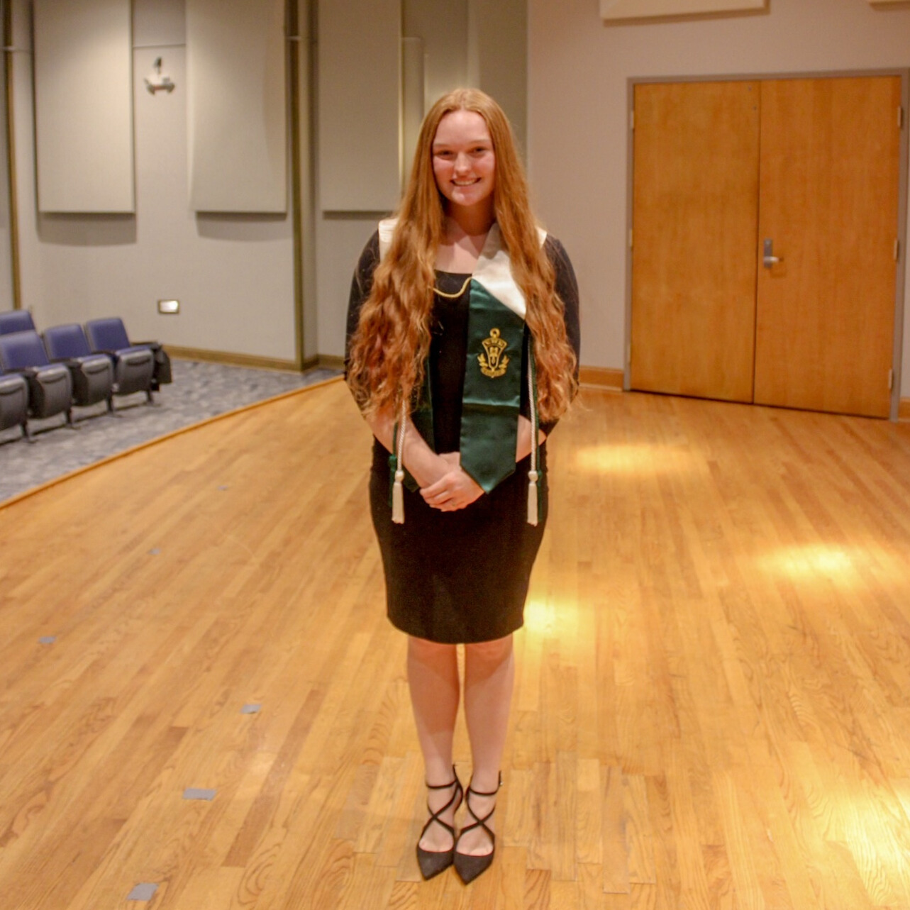
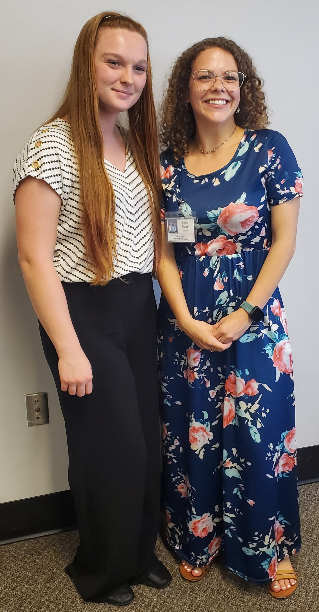
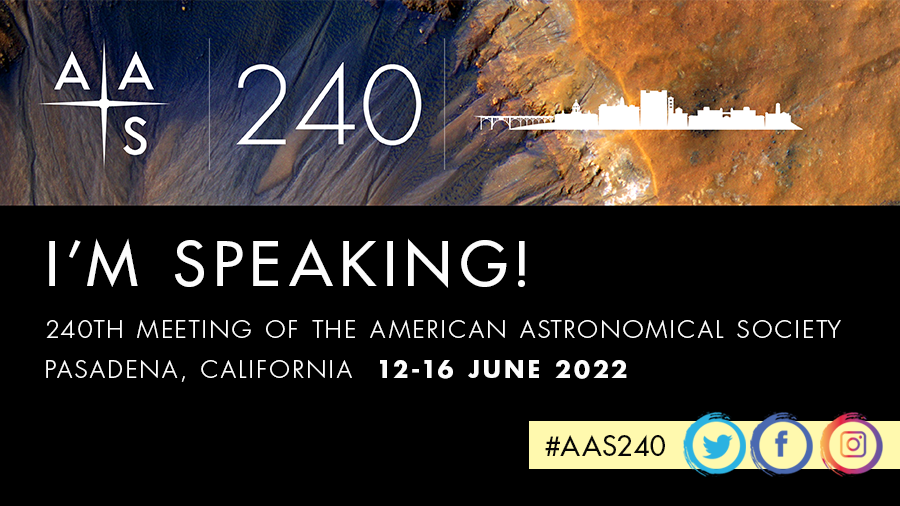

News & Events
Find out more about what our research group has been up to recently!
Erba et al. In Press
Recent articles:
- SpecpolFlow: a new software package for spectropolarimetry using Python
- The Polstar UV spectropolarimetry mission
- High energy emission powered by accreting companions of Be/gamma Cas stars
- Variable Polarization of WR 31a: Binary Companion or Corotating Interaction Region?
- Modeling of Rayleigh scattering and interstellar polarization for evolved late-type stars
- Analyzing stellar and interstellar contributions to polarization: modeling approaches for hot stars
- Spectropolarimetry for Discerning Geometry and Structure in Circumstellar Media of Hot Massive Stars
- X-Shooting ULLYSES: Massive stars at low metallicity: XII. Clumped winds of O-type (super)giants in the Large Magellanic Cloud
- New Frontiers in the Study of Magnetic Massive Stars with the Habitable Worlds Observatory
- First Observation of the Complete Rotation Period of the Ultraslowly Rotating Magnetic O Star HD 54879
See also:
- Astronomy in Appalachia: Five Lessons in Designing a Planetarium Show
- Student feature: AAS News Empowered by Advocacy: My Experience at the 2025 AAAS CASE Workshop, by Faith Simmons
- Student feature: Larra Fouch in ETSU News: ETSU honors first-generation college students
- Student feature: SPS Picture a Physicist, by Faith Simmons
Posters, Conferences, and Zone Meetings, oh my!
Dr. Erba's students presented posters this Fall at the McNair-Ledford Undergraduate Research Symposium at Lee University, the Annual Meeting of the Southeastern Section of the American Physical Society, and the Zone 8 meeting for the Society of Physics Students and Sigma Pi Sigma. Shout out to ETSU's SPS and Sigma Pi Sigma chapters for hosting the Zone meeting this year. Congratulations on a successful meeting!


Catching the Aurora Borealis
The Northern Lights were visible as far south as western North Carolina tonight! Thanks to Patrick Wears for these stunning images.

Faith Simmons inducted to Sigma Pi Sigma
 Congratulations to Faith Simmons, who was inducted into Sigma Pi Sigma, the Physics & Astronomy Honor Society! Faith spearheaded the effort to start the first Sigma Pi Sigma chapter at ETSU. She joins six other members of her Department in this inaugural cohort.
Congratulations McNair Scholars 2024!
 Congratulations to Faith Simmons and Larra Fouch on earning "Scholar" status through ETSU's Ronald E. McNair Postbaccalaureate Achievement Program. A special shout-out to Faith for taking second place in the "Best Presentation" competition!
Congratulations Graduates!
 Congratulations to Trevor Cox (B.S. with Honors Physics, B.B.A Management) and Grace Anderson (B.S. in Physics),
ETSU class of 2024!
Congratulations to Trevor Cox (B.S. with Honors Physics, B.B.A Management) and Grace Anderson (B.S. in Physics),
ETSU class of 2024!
SpecpolFlow Beta is Live!
 If you are attending AAS #243, check out our talk announcing
SpecpolFlow,
our new open source, pythonic workflow for optical spectropolarimetry. Find the abstract for the talk
here.
If you are attending AAS #243, check out our talk announcing
SpecpolFlow,
our new open source, pythonic workflow for optical spectropolarimetry. Find the abstract for the talk
here.
Premiere: Astronomy in Appalachian Culture!
 Join us at ETSU's Planetarium to view our new program, "Astronomy in Appalachian Culture!"
A daytime show for the ETSU community will be held on 17 April and an evening show for the general public will be held on 20 April.
Learn more about planting by the signs, folk tales about the Moon, and how these themes relate to how we study the night sky!
Thanks to Dane Cannon for this fantastic image of the Moon, as photographed from ETSU's Observatory.
Join us at ETSU's Planetarium to view our new program, "Astronomy in Appalachian Culture!"
A daytime show for the ETSU community will be held on 17 April and an evening show for the general public will be held on 20 April.
Learn more about planting by the signs, folk tales about the Moon, and how these themes relate to how we study the night sky!
Thanks to Dane Cannon for this fantastic image of the Moon, as photographed from ETSU's Observatory.
Public Talk at Bays Mountain Astronomy Club
 Join us and the Bays Mountain Astronomy Club in the planetarium theater to hear our 7 April talk on "Astronomy in Appalachian Culture."
Details are available in this month's
BMAC Newsletter.
Join us and the Bays Mountain Astronomy Club in the planetarium theater to hear our 7 April talk on "Astronomy in Appalachian Culture."
Details are available in this month's
BMAC Newsletter.
Dessert with the Experts
 Join this week's "Dessert with the Experts" talk to hear more about our project to develop a new program for ETSU's Planetarium.
Join this week's "Dessert with the Experts" talk to hear more about our project to develop a new program for ETSU's Planetarium.
See you at AAS!
 If you are attending AAS #240, check out my talk on "Characterizing massive star magnetospheres at ultraviolet wavelengths"